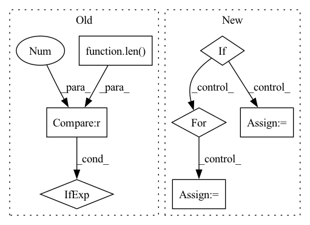

Pattern ID :4292
Before Change
else:
threshold_time_stamp = find_time_threshold(df_list, n_lags, valid_p, inputs_overbleed)
df_train, df_val = split_considering_timestamp(df_list, threshold_time_stamp)
df_train = df_train[0] if len(df_train) == 1 else df_train
df_val = df_val[0] if len(df_val) == 1 else df_val
return df_train, df_val
After Change
raise ValueError("Please insert valid df type (i.e. pd.DataFrame, dict)")
df_train = {}
df_val = {}
if local_split:
for key in df_dict:
df_train[key], df_val[key] = _split_df(df_dict[key], n_lags, n_forecasts, valid_p, inputs_overbleed)
else:
if len(df_dict) == 1:
for df_name, df_i in df_dict.items():
df_train[df_name], df_val[df_name] = _split_df(df_i, n_lags, n_forecasts, valid_p, inputs_overbleed)
else:
// Split data according to time threshold defined by the valid_p
threshold_time_stamp = find_time_threshold(df_dict, n_lags, valid_p, inputs_overbleed)In pattern: SUPERPATTERN
Frequency: 3
Non-data size: 7
Instances Fragment ID: 15776288
Project Name: ourownstory/neural_prophet
Commit Name: 6619741f934957dff2a7fa4ff66620772d41471f
Time: 2022-02-14
Author: ourownstory@users.noreply.github.com
File Name: neuralprophet/df_utils.py
M Class Name: AnonimousClass
N Class Name: AnonimousClass
M Method Name: split_df(6)
N Method Name: split_df(6)
M Parent Class:
N Parent Class:
M File Name: neuralprophet/df_utils.py
N File Name: neuralprophet/df_utils.py
M Start Line: 532
M End Line: 548
N Start Line: 573
N End Line: 598
Before Change
else:
threshold_time_stamp = find_time_threshold(df_list, n_lags, valid_p, inputs_overbleed)
df_train, df_val = split_considering_timestamp(df_list, threshold_time_stamp)
df_train = df_train[0] if len(df_train) == 1 else df_train
df_val = df_val[0] if len(df_val) == 1 else df_val
return df_train, df_val
After Change
raise ValueError("Please insert valid df type (i.e. pd.DataFrame, dict)")
df_train = {}
df_val = {}
if local_split:
for key in df_dict:
df_train[key], df_val[key] = _split_df(df_dict[key], n_lags, n_forecasts, valid_p, inputs_overbleed)
else:
if len(df_dict) == 1:
for df_name, df_i in df_dict.items():
df_train[df_name], df_val[df_name] = _split_df(df_i, n_lags, n_forecasts, valid_p, inputs_overbleed)
else:
// Split data according to time threshold defined by the valid_p
threshold_time_stamp = find_time_threshold(df_dict, n_lags, valid_p, inputs_overbleed) Fragment ID: 15776289
Project Name: ourownstory/neural_prophet
Commit Name: 6619741f934957dff2a7fa4ff66620772d41471f
Time: 2022-02-14
Author: ourownstory@users.noreply.github.com
File Name: neuralprophet/df_utils.py
M Class Name: AnonimousClass
N Class Name: AnonimousClass
M Method Name: split_df(6)
N Method Name: split_df(6)
M Parent Class:
N Parent Class:
M File Name: neuralprophet/df_utils.py
N File Name: neuralprophet/df_utils.py
M Start Line: 532
M End Line: 548
N Start Line: 573
N End Line: 598
Before Change
Returns:
The block string
collapse = len(content) <= 1
trailing = "" if collapse else ","
if isinstance(braces, str):
braces = _BRACE_TO_BRACES[braces]After Change
lines = cls()
lines += f"{header}{brace_start}"
with lines.indent():
if collapse:
lines += ", ".join(parts)
else:
for p in parts:
lines += f"{p},"
lines += f"{brace_end}"
return lines.join(collapse=collapse) Fragment ID: 15776292
Project Name: google/etils
Commit Name: 89d6729b6216f79edd2b5132085e6ad048ed2e21
Time: 2023-04-04
Author: epot@google.com
File Name: etils/epy/text_utils.py
M Class Name: Lines
N Class Name: Lines
M Method Name: make_block(0)
N Method Name: make_block(0)
M Parent Class:
N Parent Class:
M File Name: etils/epy/text_utils.py
N File Name: etils/epy/text_utils.py
M Start Line: 169
M End Line: 181
N Start Line: 177
N End Line: 202
Before Change
for df in df_list:
checked_df.append(_check_dataframe(df, check_y, covariates, regressors, events))
df = checked_df
return df[0] if len(df) == 1 else df
def crossvalidation_split_df(df, n_lags, n_forecasts, k, fold_pct, fold_overlap_pct=0.0):After Change
if isinstance(df, pd.DataFrame):
checked_df = check_single_dataframe(df, check_y, covariates, regressors, events)
elif = {}
for key, df_i in df.items():
checked_df[key] = check_single_dataframe(df_i, check_y, covariates, regressors, events)
else:
raise ValueError("Please insert valid df type (i.e. pd.DataFrame, dict)")
return checked_df Fragment ID: 15776296
Project Name: ourownstory/neural_prophet
Commit Name: 6619741f934957dff2a7fa4ff66620772d41471f
Time: 2022-02-14
Author: ourownstory@users.noreply.github.com
File Name: neuralprophet/df_utils.py
M Class Name: AnonimousClass
N Class Name: AnonimousClass
M Method Name: check_dataframe(5)
N Method Name: check_dataframe(5)
M Parent Class:
N Parent Class:
M File Name: neuralprophet/df_utils.py
N File Name: neuralprophet/df_utils.py
M Start Line: 383
M End Line: 388
N Start Line: 394
N End Line: 402